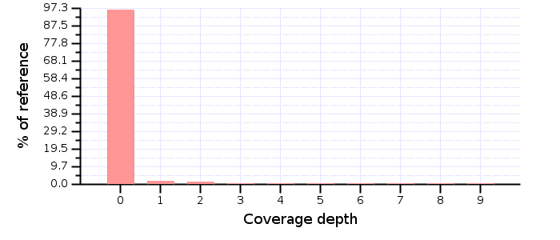
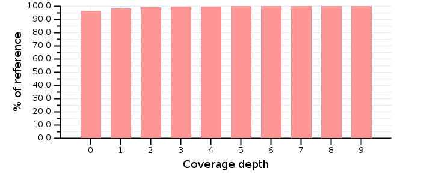
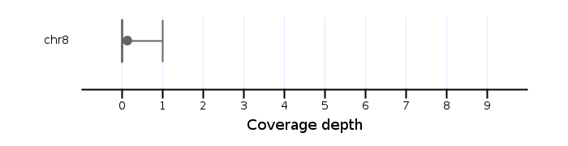

<h1>chr8: Coverage distribution</h1>
<table border="1">
<thead>
<tr>
<th>Id</th>
<th>N</th>
<th>Mean</th>
<th>Median</th>
<th>sd</th>
<th>q1</th>
<th>q3</th>
<th>2.5% percentile</th>
<th>97.5% percentile</th>
<th>Min</th>
<th>Max</th>
</tr>
</thead>
<tbody>
<tr>
<td>chr8</td>
<td>129,401,213</td>
<td>0.14</td>
<td>0.00</td>
<td>39.79</td>
<td>0.00</td>
<td>0.00</td>
<td>0.00</td>
<td>1.00</td>
<td>0.00</td>
<td>74,742.00</td>
</tr>
</tbody>
</table>
<br>
<h2>Histogram</h2>

<h2>Cumulative histogram</h2>

<h2>Box and Whisker summary</h2>

<hr>
